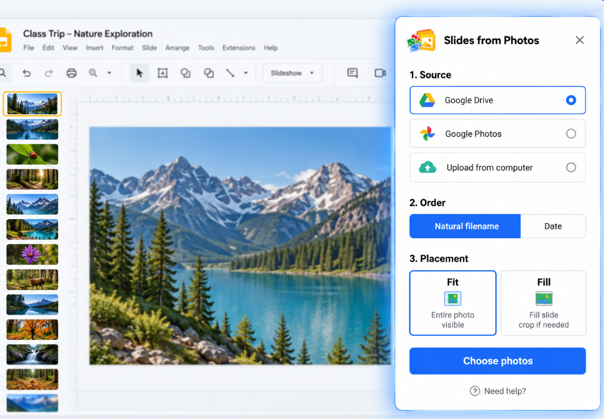
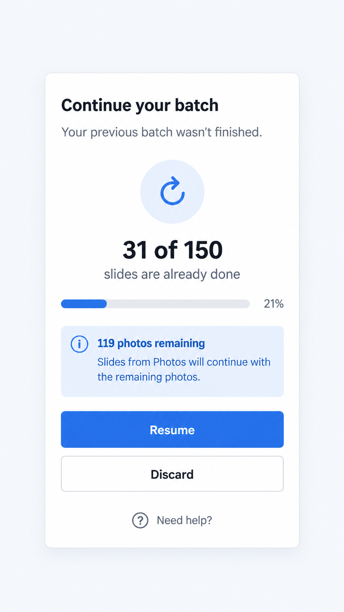
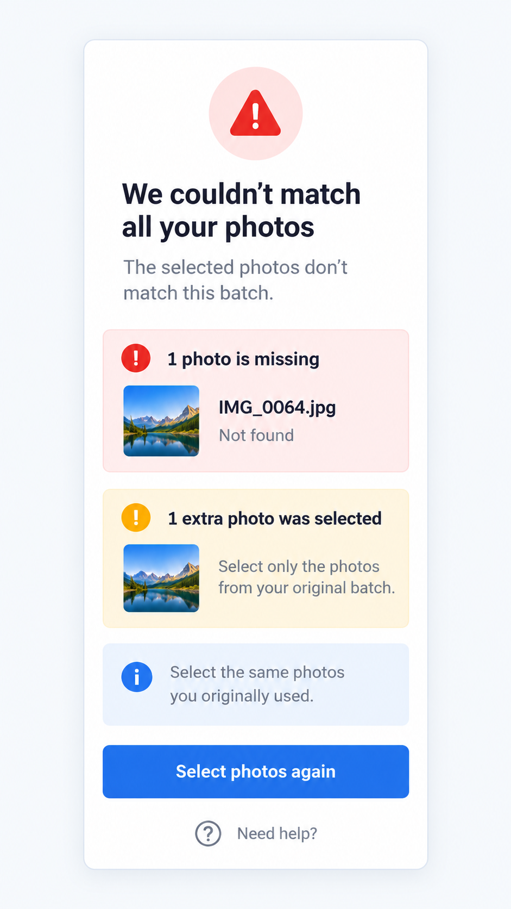
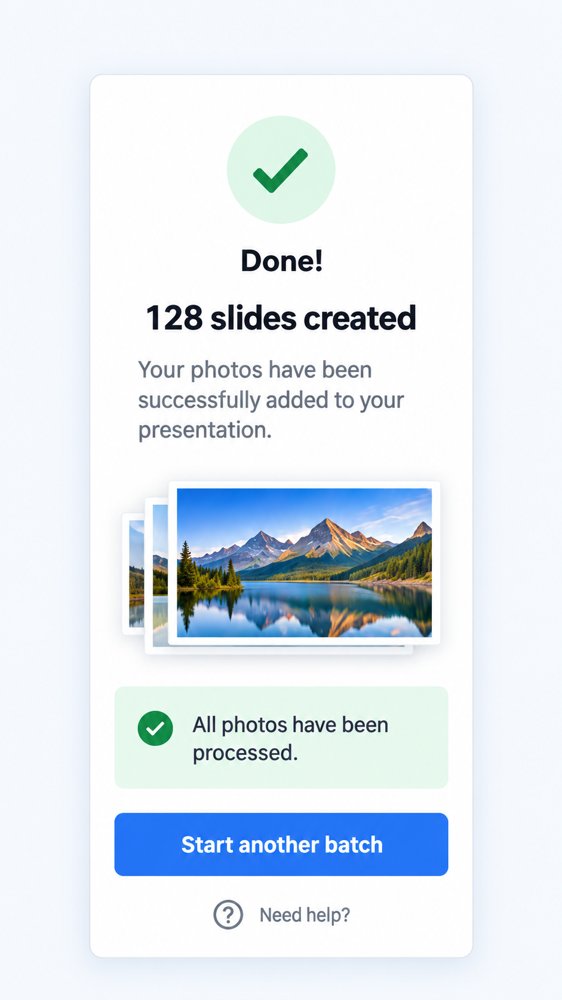

01
Choose your photos
Select photos from Google Drive, Google Photos, or your computer.
Import photos from Google Drive, Google Photos, or your computer. Review the batch, control the order, choose Fit or Fill, and create your slides automatically.
Slides from Photos is a product by DZS Labs. Installation will be available when the add-on launches.

Slides from Photos is a Google Slides add-on that turns a batch of photos into a presentation, creating one slide per photo. Import photos from Google Drive, Google Photos, or your computer, control the order, choose Fit or Fill, and create your slides in one batch.
Select photos from Google Drive, Google Photos, or your computer.
Check the selected photos and choose how they should be ordered.
Keep the full image visible or fill the entire slide.
Slides from Photos creates one slide per photo and shows progress while the batch is processed.

Slides from Photos saves your progress automatically while creating slides. If a batch is interrupted, you can resume from where it stopped instead of starting over.

If photos are missing, extra, or don’t match the original batch, Slides from Photos tells you what needs attention before continuing.

When processing is complete, you’ll see a clear confirmation that all photos have been processed.
Google services
Slides from Photos requests access to Google services only when needed to provide its photo-to-slides functionality.
Access is used to create and update slides in the presentation you are working with.
Access is used when you choose photos stored in Google Drive.
Access is used when you explicitly choose Google Photos as your photo source.
Photos selected from your computer are used only to provide the photo-to-slides functionality you request.
Slides from Photos does not use Google user data for advertising.
Yes. Slides from Photos creates one Google Slide for each selected photo.
Yes. Google Photos is available as a photo source.
Yes. You can select photos stored in Google Drive and turn them into individual Google Slides.
Yes. You can select local photos directly from your computer.
Yes. You can review the batch, control the photo order, and choose Fit or Fill before creating the slides.
We believe users should understand how their data is used. See our Privacy Policy for details about how Slides from Photos accesses, uses, stores, and shares Google user data.